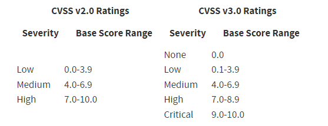
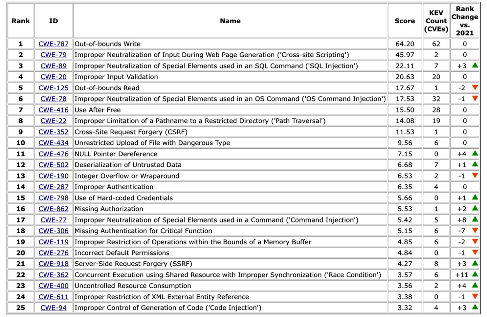

According to NIST, metrics are tools designed to facilitate
decision making and improve performance and accountability through collection,
analysis, and reporting of relevant performance-related data. There are many
approaches that seek to provide actionable intelligence for software security.
Regardless of approach, security metrics should be aligned with or support business
goals.
Objectives
Identify the metrics in software development.
Metrics are measurement information that must be clearly defined
before collection begins. Two common categories of general security metrics include
and . KPIs are
metrics used by organizations to measure progress towards an organizational goal or
objective. Assuming security is part of organizationally defined goals then security
metrics would be included in organizational KPIs.
KRIs are metrics that focus on monitoring risk. Typically, a
predefined threshold is established and once that threshold is reached, relevant
parties are alerted. KRI thresholds are defined largely by organizational risk
tolerance. KRIs aid in effectively reporting risk management results to stakeholders
so to inform organizational actions. KRIs focus on measuring risk management
efforts. KPIs focus on business goal performance.
Characteristics of Good Metrics
Characteristics of good metrics include:
They are consistent. There should be no significant deviation between
each measurement.
They are contextually specific. The metrics should be expressed in more
than one unit of measurement.
They are inexpensive. The metrics should be generated automatically
instead of manually.
They are objective. The findings should be indicative of the actual
state of security in the software or system, and not the opinion of the person
conducting the measurements or the stakeholder.
They are quantitative. The metrics should be precise and expressed in
terms of cardinal numbers or as a percentage.
General Software Development
Metrics
DevSecOps methodology includes considerations for metrics
related to both the software development processes and the quality and security of
the software itself. In a rapid-paced delivery environment, metrics are important
for situational awareness as processes and products evolve. Below are some possible
operationsfocused metrics that can benefit both the business and software
stakeholders:
Deployment frequency
Lead time from development to production
Ratio of failed deployments
Even if an organization has not embraced DevSecOps, it will
still depend on metrics for awareness. For instance, metrics regarding the average
amount of time to complete a feature (i.e., from the time that the requirements for
the feature are solidified and the user story is created, to the time that the
feature ends up in production) tracked over time could show increased or decreased
organizational efficiency. Perhaps an organization might create a metric to measure
the average amount of time to fix a software defect (i.e., from the time that the
defect is entered into the defect tracking system or into the backlog to the time
that the fix is applied and verified) based on priority. If higher priority software
defects sit in the backlog or work queue than lower priorities, then management may
want to investigate the reasoning.
Software Assurance Metrics
The previous section discussed the concept of operational
software metrics. Within software assurance metrics practitioners seek to understand
and describe the security flaws or technical debt of the software product that the
organization is creating. Or as defined by NIST, software assurance is the level of
confidence that software is free from vulnerabilities, either intentionally designed
into the software or accidentally inserted at any time during its life cycle, and
that the software functions as intended.
Cyclomatic Complexity
Complexity almost always increases risk for projects and
processes, and software development is no exception. One method of measuring
software complexity is cyclomatic complexity. Cyclomatic complexity directly
describes the density of a code section (e.g., function block) and quantitatively
describes the number of possible linearly independent execution paths. Simply put,
it answers the question, “How many independent execution paths does a function
contain?” The higher the complexity measure the more risk an organization inherits
throughout the SDLC by committing the code section.
For scope, a code section that contains no branching logic would
have a cyclomatic complexity of 1. Alternately, if the code section has two paths
for execution, then the cyclomatic complexity is 2. Below is a guide for
understanding the cyclomatic complexity consideration for a code section:
1-10—Simple (low risk)
1-20—Not Simple (moderate risk)
2-50—Complex (high risk)
> 50 Untestable (very high risk)
Severity Levels
The NVD provides qualitative severity ratings based on
quantitative binning of Common Vulnerability Scoring System (CVSS) scores. These
categories of severity help organizations understand software flaws and prioritize
risk mitigating actions. At present there are two CVSS ratings that are utilized
(see below).

Table 2 Note: When referring to vulnerabilities and CVSS,
production code is implied.
Similarly, there is the Common Weakness Scoring System
(CWSS)15, which describes poor coding practices (before production)
within a range of 0 to 100. Often static analysis tools are used to discover
potential CWEs and assign a CWSS score for prioritization. Annually, the MITRE CWE
project releases a CWE TOP 25 list16 based on the previous calendar years
data. Generally, as a minimum, organizations will reject source code additions that
contain coding issues related to the CWE TOP 25. The table below shows the results
from 2022.

Table 5
SAMATE
The Software Assurance Metrics and Tool Evaluation (SAMATE)
project seeks to standardize software security metrics reporting for various
categories of software security assessment tools. For example, at the time of this
writing there are many vulnerability scanning tools that report the severities or
criticalities of defects differently. Without standardization of tool output,
aggregating and comparing vulnerability scanning tool results is a challenging
problem.
15 Common Weakness Enumeration: A Community Developed
List of Software and Hardware Weakness Types, Common Weakness Scoring System; https://cwe.mitre.org/cwss/cwss_v1.0.1.html; retrieved May
2023.
Measuring Software Security Through
Attack Surface Evaluation
Attack surface evaluation will be covered in detail in other
domains, but a brief introduction is necessary at this point. One established method
of measuring software security is a technique called attack surface evaluation. It
can help understand and manage application security risks as an application is
designed, implemented, and changed.
In general, the larger the attack surface, the less secure the
application. With that noted, it should be expected that as an application evolves
over time and new features are added to it, its attack surface will increase
accordingly. In fact, the relative attack surface quotient (RASQ) may be used to
measure the attack surface of an application and track changes to the attack surface
over time. This method makes it possible to calculate an overall attack surface
score for the system and measure this score as changes are made to the system and to
how it is deployed.
Security Metrics (2.5)
According to NIST, metrics are tools designed to facilitate decision making and improve performance and accountability through collection, analysis, and reporting of relevant performance-related data. There are many approaches that seek to provide actionable intelligence for software security. Regardless of approach, security metrics should be aligned with or support business goals.
Objectives
Metrics are measurement information that must be clearly defined before collection begins. Two common categories of general security metrics include and . KPIs are metrics used by organizations to measure progress towards an organizational goal or objective. Assuming security is part of organizationally defined goals then security metrics would be included in organizational KPIs.
KRIs are metrics that focus on monitoring risk. Typically, a predefined threshold is established and once that threshold is reached, relevant parties are alerted. KRI thresholds are defined largely by organizational risk tolerance. KRIs aid in effectively reporting risk management results to stakeholders so to inform organizational actions. KRIs focus on measuring risk management efforts. KPIs focus on business goal performance.
Characteristics of Good Metrics
Characteristics of good metrics include:
General Software Development Metrics
DevSecOps methodology includes considerations for metrics related to both the software development processes and the quality and security of the software itself. In a rapid-paced delivery environment, metrics are important for situational awareness as processes and products evolve. Below are some possible operationsfocused metrics that can benefit both the business and software stakeholders:
Even if an organization has not embraced DevSecOps, it will still depend on metrics for awareness. For instance, metrics regarding the average amount of time to complete a feature (i.e., from the time that the requirements for the feature are solidified and the user story is created, to the time that the feature ends up in production) tracked over time could show increased or decreased organizational efficiency. Perhaps an organization might create a metric to measure the average amount of time to fix a software defect (i.e., from the time that the defect is entered into the defect tracking system or into the backlog to the time that the fix is applied and verified) based on priority. If higher priority software defects sit in the backlog or work queue than lower priorities, then management may want to investigate the reasoning.
Software Assurance Metrics
The previous section discussed the concept of operational software metrics. Within software assurance metrics practitioners seek to understand and describe the security flaws or technical debt of the software product that the organization is creating. Or as defined by NIST, software assurance is the level of confidence that software is free from vulnerabilities, either intentionally designed into the software or accidentally inserted at any time during its life cycle, and that the software functions as intended.
Cyclomatic Complexity
Complexity almost always increases risk for projects and processes, and software development is no exception. One method of measuring software complexity is cyclomatic complexity. Cyclomatic complexity directly describes the density of a code section (e.g., function block) and quantitatively describes the number of possible linearly independent execution paths. Simply put, it answers the question, “How many independent execution paths does a function contain?” The higher the complexity measure the more risk an organization inherits throughout the SDLC by committing the code section.
For scope, a code section that contains no branching logic would have a cyclomatic complexity of 1. Alternately, if the code section has two paths for execution, then the cyclomatic complexity is 2. Below is a guide for understanding the cyclomatic complexity consideration for a code section:
Severity Levels
The NVD provides qualitative severity ratings based on quantitative binning of Common Vulnerability Scoring System (CVSS) scores. These categories of severity help organizations understand software flaws and prioritize risk mitigating actions. At present there are two CVSS ratings that are utilized (see below).
Table 2 Note: When referring to vulnerabilities and CVSS, production code is implied.
Similarly, there is the Common Weakness Scoring System (CWSS)15, which describes poor coding practices (before production) within a range of 0 to 100. Often static analysis tools are used to discover potential CWEs and assign a CWSS score for prioritization. Annually, the MITRE CWE project releases a CWE TOP 25 list16 based on the previous calendar years data. Generally, as a minimum, organizations will reject source code additions that contain coding issues related to the CWE TOP 25. The table below shows the results from 2022.
Table 5
SAMATE
The Software Assurance Metrics and Tool Evaluation (SAMATE) project seeks to standardize software security metrics reporting for various categories of software security assessment tools. For example, at the time of this writing there are many vulnerability scanning tools that report the severities or criticalities of defects differently. Without standardization of tool output, aggregating and comparing vulnerability scanning tool results is a challenging problem.
15 Common Weakness Enumeration: A Community Developed List of Software and Hardware Weakness Types, Common Weakness Scoring System; https://cwe.mitre.org/cwss/cwss_v1.0.1.html; retrieved May 2023.
16 Ibid.; https://cwe.mitre.org/top25/archive/2022/2022_cwe_top25.html; retrieved June 2023.
Measuring Software Security Through Attack Surface Evaluation
Attack surface evaluation will be covered in detail in other domains, but a brief introduction is necessary at this point. One established method of measuring software security is a technique called attack surface evaluation. It can help understand and manage application security risks as an application is designed, implemented, and changed.
In general, the larger the attack surface, the less secure the application. With that noted, it should be expected that as an application evolves over time and new features are added to it, its attack surface will increase accordingly. In fact, the relative attack surface quotient (RASQ) may be used to measure the attack surface of an application and track changes to the attack surface over time. This method makes it possible to calculate an overall attack surface score for the system and measure this score as changes are made to the system and to how it is deployed.